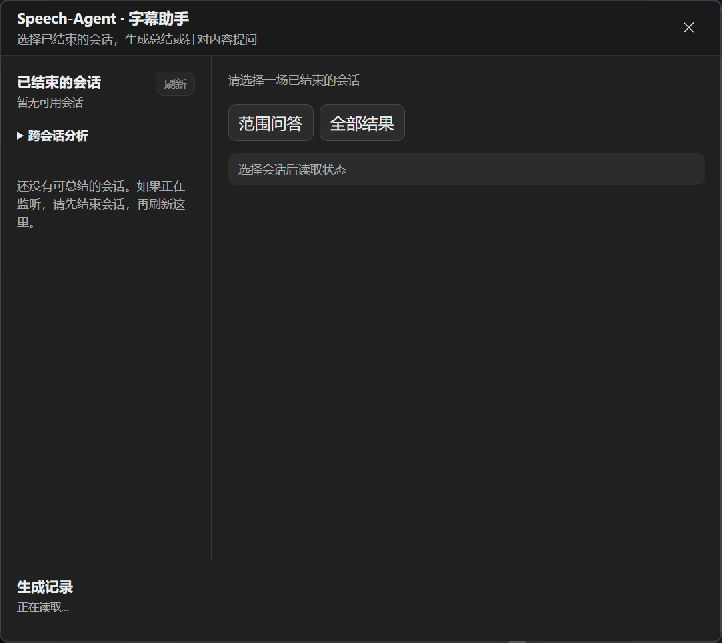
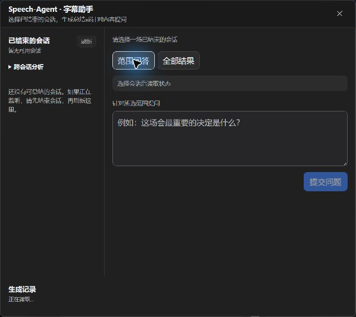
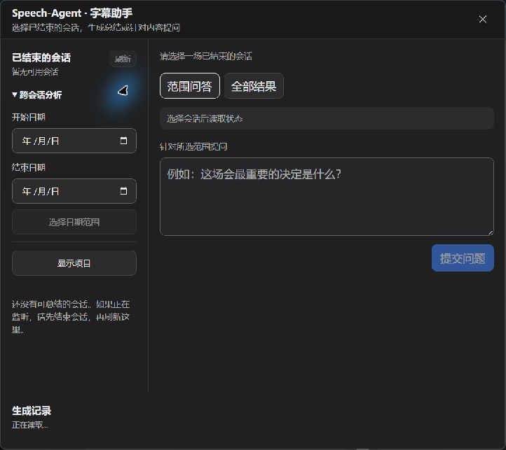
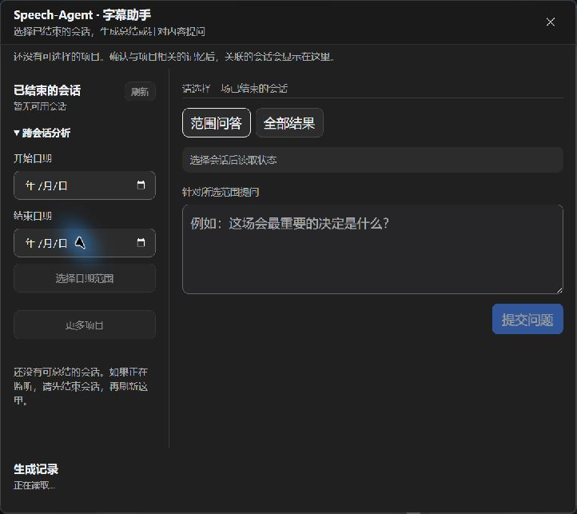
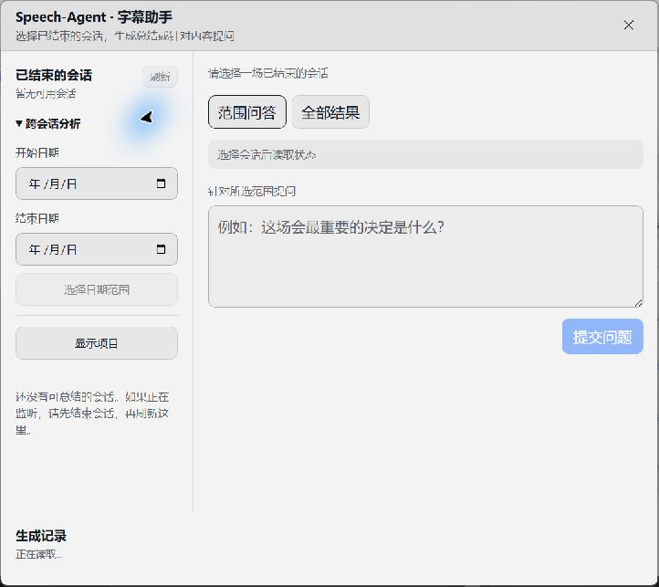
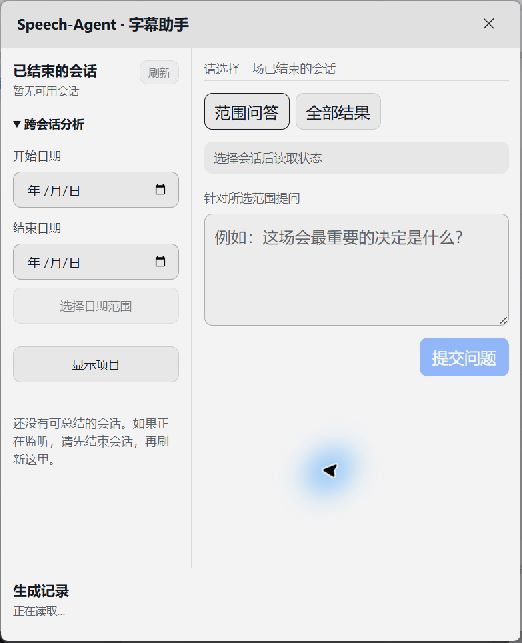

深色 · 初始界面
722 × 643 · 未启动音频采集或模型请求
原图 SHA-256
289d7b94634d6d8f01e4013d2eb26afbb0b957d4617dd3430ad0864a953505b1

深色 · 范围问答
722 × 643 · 未启动音频采集或模型请求
原图 SHA-256
fe98672bfbe1e1675ff4efabbb26ea61242063b7bccedd0c73d44c10834af716

深色 · 日期范围展开
722 × 643 · 未启动音频采集或模型请求
原图 SHA-256
68ab866248b5840fae4a725b3813096b2dc099c79a2c44720b339aecc312aab8

深色 · 项目空状态与长提示
722 × 643 · 未启动音频采集或模型请求
原图 SHA-256
ec2c3008874736d564740889113e9aade3ad4d7766b98296d0e4466c0c19e84c

浅色 · 日期范围与提问区
722 × 643 · 未启动音频采集或模型请求
原图 SHA-256
5947026b94e8244f315d7643a50fe01674f4885cb79397e1a39fa4972589d5ce

浅色 · 520px 窄窗口
522 × 643 · 未启动音频采集或模型请求
原图 SHA-256
5cf8dbac722f68780d25f89b9d8838cd916c0af209c77a48e7581be4b0abfaa0